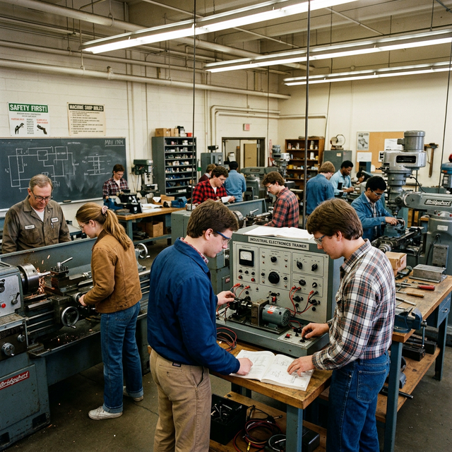
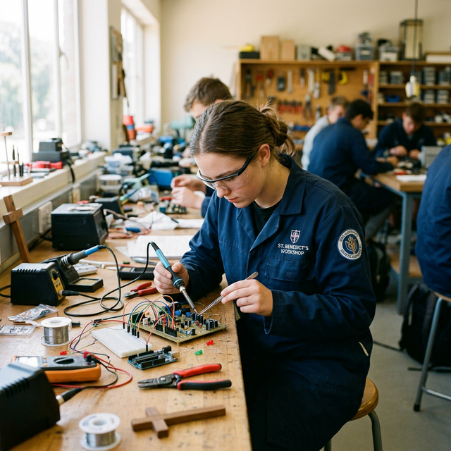

We empower lives through world-class technical skills and holistic values formation in the Philippines.
Dualtech Training Center began in Manila in 1982 as a social development project.
Through a landmark collaboration between the Southeast Asian Science Foundation and the Hanns Seidel Foundation of Bavaria, Germany, we brought the renowned German model of the Dual Training System (DTS) to our shores.
By blending extensive in-plant training with life-changing in-school education, we bridge the gap between industry demands and technical schooling.

Four decades of shaping lives and driving industrial progress.
Dualtech began as a social development initiative, born from a partnership to introduce the German Dual Training System to the Philippines, aiming to alleviate poverty through excellent technical education.
As the agricultural estate of Canlubang transformed into an industrial hub, Dualtech expanded its operations. We launched programs to equip local residents, especially the youth, with skills for newly established factories.
President Fidel V. Ramos signed Republic Act No. 7686, the Dual Training System Act of 1994. Dualtech played a pioneering role by setting the standard and institutionalizing the DTS across accredited educational institutions nationwide.
From our prime location in Canlubang, Dualtech continues to supply highly skilled electromechanics technicians to the global industry, recognizing the initial 40 partner companies that made it all possible.

Inspired by the message of Opus Dei, we focus on the everyday holiness of individuals in their professional duties.
The bedrock of Dualtech's foundation is built upon values that go far beyond technical mechanics. It is about discovering God in life's ordinary situations.
Transforming ordinary, honest work into a pathway for spiritual growth and excellence.
Combining top-tier electronics and mechanical technology training with profound character building.
Fostering social responsibility by using professional skills to serve society profoundly.
Join the thousands of skilled electromechanics technicians who have passed through our programs.
Learn More